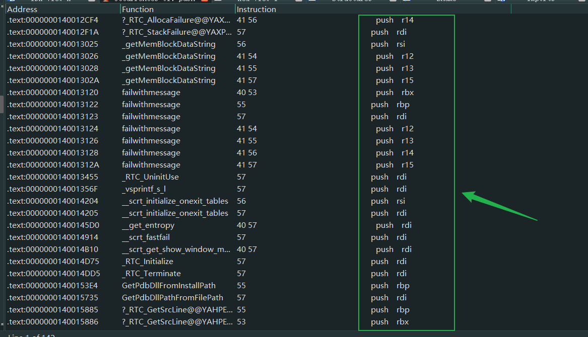

# 初学 x64 汇编
要学习的 x64 汇编是 AMD64 与 Intel64 的合称。
最早是 Intel 实现了一套 64 位的指令集，但是不兼容之前的 32 位程序，后来 AMD 实现了一套兼容 32 位程序的 64 位指令集，后来的 64 位程序都按照 AMD 的标准实现了，Intel 也得支持这套指令集了。
# 寄存器
在 16 位和 32 位的编程里，可以使用的通用寄存器是一样的，如下所示：
| 8 位 | 16 位 | 32 位 |
|---|---|---|
| al | ax | eax |
| cl | cx | ecx |
| dl | dx | edx |
| bl | bx | ebx |
| ah | sp | esp |
| ch | bp | ebp |
| dh | si | esi |
| bh | di | edi |
在 x64 体系里，在原来的 8 个通用寄存器的基础上新增了 8 个寄存器，并且原来的寄存器也得到了扩展。
在 64 位编程里可以使用的通用寄存器如下所示：
更直观一点来看：
| 8 位 | 16 位 | 32 位 | 64 位 |
|---|---|---|---|
| al/ah | ax | eax | rax |
| cl/ch | cx | ecx | rcx |
| dl/dh | dx | edx | rdx |
| bl/bh | bx | ebx | rbx |
| spl | sp | esp | rsp |
| bpl | bp | ebp | rbp |
| sil | si | esi | rsi |
| dil | di | edi | rdi |
| r8b | r8w | r8d | r8 |
| r9b | r9w | r9d | r9 |
| r10b | r10w | r10d | r10 |
| r11b | r11w | r11d | r11 |
| r12b | r12w | r12d | r12 |
| r13b | r13w | r13d | r13 |
| r14b | r14w | r14d | r14 |
| r15b | r15w | r15d | r15 |
在 64 位编程里可以使用 20 个 8 位寄存器和 16 个 16 位、32 位以及 64 位寄存器，寄存器体系得到了完整的补充。
所有的 16 个寄存器都可以分割出相应的 8 位、16 位或 32 位寄存器。
在 16 位编程和 32 位编程里， sp 、 bp 、 si 及 di 不能使用低 8 位。
在 64 位编程里，可以使用分割出的 spl 、 bpl 、 sil 及 dil 低 8 位寄存器。
64 位的 r8~r15 寄存器分割出相对应的 8 位、16 位及 32 位寄存器形式为: r8b~r15b , r8w~r15w , 以及 r8d~r15d 。
还有 rip 与 rflags ，64 位的 rflags 寄存器高 32 位为保留位，低 32 位与 32 位下的 eflags 寄存器一样。
# 虚拟地址空间
在 x64 体系中使用了 canonical 地址形式，但在 x64 体系里只实现了 48 位的 virtual address , 高 16 位被用做符号扩展。
这高 16 位要么全是 0，要么全是 1，这种形式的地址被称为 canonical 地址，如下所示：
与 canonical 地址形式相对的是 non-canoncial 地址形式，如下所示。在 64 位模式下 non-canonical 地址形式是不合法的。
在 64 位的线性地址空间里，
0x00000000_00000000到0x00007FFF_FFFFFFFF是合法的canonical地址。0x00008000_00000000到0xFFFF7FFF_FFFFFFFF是非法的non-canonical地址。0xFFFF8000_00000000到0xFFFFFFFF_FFFFFFFF是合法的canonical地址。
在 non-canonical 地址形式里，它们的符号扩展位出现了问题。
看下面的地址：
FFFF8010_bc001000 ：这是符合 canonical-address 的地址， MSB 是 bit47，值为 1。 而 bit63 ~ bit48 全是 1
00007c80_b8102040 ：这是符合 canonical-address 的地址， MSB 是 bit47，值为 0。 而 bit63 ~ bit48 全是 0
实质上， canonical-address 地址中 bit63 ~ bit48 是符号扩展位。 bit47 是 64 位地址中最高能表示的位（MSB）。
# x64 体系中需要注意的事情
- 对 32 位寄存器的写操作（包括运算结果），会对相应的 64 位寄存器的搞 32 位清零。
如下所示：
这是执行 mov eax, 1 指令之前的 rax 寄存器
执行后 rax 寄存器中的值：
此举影响所有的 64 位寄存器。
另一个例子：
执行 sub eax,1 之前：
执行之后，只有低 32 位是对的：
还有 xor eax,eax 这个指令并不只是清零 eax , rax 也会被清零。
33C0 | xor eax,eax | |
48:33C0 | xor rax,rax |
以上汇编代码的作用是一样的都会将 rax 寄存器清零，但生成的硬编码是不一样的，所以编译器一般想要清空 rax 寄存器就会生成 xor eax,eax 汇编代码。
64 位编程中代码的函数的返回值 return 0 那么就会生成 xor eax,eax 汇编代码。
- 立即数的使用，优先使用 32 位扩展，64 位立即数指令较少。
当你在 x64dbg 中输入 mov rax,1 它会自动生成 mov eax, 1 如果数值较大的话就会使用 rax，编译器也会对这些语句进行优化，优先使用硬编码短的。
48:C7C0 FFFFFFFF | mov rax,FFFFFFFFFFFFFFFF | | |
48:B8 FFFFFFFFFFFFFFFF | mov rax,FFFFFFFFFFFFFFFF | | |
66:B8 0100 | mov ax,1 | | |
B0 01 | mov al,1 | | |
B8 01000000 | mov eax,1 | | |
48:B8 8967452301000000 | mov rax,123456789 | | |
48:B8 0100000000000000 | mov rax,1 | |
64 位指令比较少，如 push 指令操作立即数，只能操作 32 位立即数。
好多指令都是不支持 8 字节的立即数。
如果想要把 0x123456789 这样的立即数压入栈中就必须得分为两步：
mov rax,0x123456789; | |
pus rax |
此外 x64 下还有其他的 nop 指令，如下所示：
| 90 | nop | | |
| 0F1FFE | nop esi,edi | | |
| 0F1F1D 1D1222CC | nop dword ptr ds:[7FF73A025174],ebx | | |
| 0F1F11 | nop dword ptr ds:[rcx],edx | |
与硬编码 0x90 不同，开头为 0x0F1F。
逻辑上这些汇编代码与 nop 指令没有任何区别。
在我看的这个教程中称这些汇编代码的出现只是编译器为了字节对齐。
- 内存优先使用相对偏移寻址，直接寻址指令较少。
例如 mov 指令：
00007FF76DE03F6C | 48:8B05 01000000 | mov rax,qword ptr ds:[7FF76DE03F74] | | |
00007FF76DE03F73 | 90 | nop | | |
00007FF76DE03F74 | 90 | nop | |
硬编码是 48:8B05 + 4个字节相对地址偏移 便是 mov rax,qword ptr ds:[此指令地址加上此指令长度加上相对偏移]
需要注意的是：4 个字节相对地址偏移，因为有正负之分所以有效的寻址范围只有正负偏移 2GB
00007FF76DE03F5A | 48:A1 0000000000000000 | mov rax,qword ptr ds:[0] | | |
00007FF76DE03F64 | 48:8B0425 00000000 | mov rax,qword ptr ds:[0] | |
这些是直接寻址的。
例如 add 指令：
00007FF76DE03F73 | 48:010425 00000000 | add qword ptr ds:[0],rax | | |
00007FF76DE03F7B | 48:0105 00000000 | add qword ptr ds:[7FF76DE03F82],rax | |
如这两个 add 指令，都是只能操作 4 个字节的相对地址偏移。
还有一件事
我们编写一个 x64 的程序在 vs2019 中看其反汇编：
而在 IDA 中查看其反汇编：
发现其前面加了 cs 段前缀，这是 IDA 的一种错误，观察其硬编码岂可已发现，我们可以在 x64dbg 中实验一下：
00007FF76DE03F82 | 48:C705 00000000 78563412 | mov qword ptr ds:[7FF76DE03F8D],12345678 | | |
00007FF76DE03F8D | 2E48:C705 00000000 78563412 | mov qword ptr cs:[7FF76DE03F99],12345678 | |
也是可以发现如果是 cs 段的话前面要加上 0x2E 的硬编码前缀。
那么 IDA 为什么会这么做呢？
因为这个指令都是相对偏移寻址，而下一个指令是绝对地址偏移，是处于 PE 结构中的代码段的，所以 IDA 识别成了 cs 段。
- 各种 jmp 比较
在 x64 地址空间中，如果加载一个 dll，那么想让程序跳转过去，不一定能实现，因为地址之间相距的大小可能超过了 2GB,
00007FF76DE03F99 | EB 00 | jmp notepad.7FF76DE03F9B | | |
00007FF76DE03F9B | E9 00000000 | jmp notepad.7FF76DE03FA0 | | |
00007FF76DE03FA0 | FF25 00000000 | jmp qword ptr ds:[7FF76DE03FA6] | | |
00007FF76DE03FA6 | FF2425 00000000 | jmp qword ptr ds:[0] | |
- 应有：hook 的指令选择
上面说了如果地址空间超过 4GB 大小，一般会这样进行跳转：
00007FF76DE03FAD | 48:B8 8967452301000000 | mov rax,123456789 | | |
00007FF76DE03FB7 | FFE0 | jmp rax | | |
// 或者这样 | |
00007FF76DE03FBA | 48:B8 8967452301000000 | mov rax,123456789 | | |
00007FF76DE03FC4 | 50 | push rax | | |
00007FF76DE03FC5 | C3 | ret | | |
// 最好是这样，既保存了 rax 寄存器的值，又可以跳转（13 个字节） | |
00007FF76DE03FC7 | 50 | push rax | | |
00007FF76DE03FC8 | 48:B8 8967452301000000 | mov rax,123456789 | | |
00007FF76DE03FD2 | C3 | ret | | |
// 21 个字节 | |
00007FF76DE03FD4 | 48:83EC 08 | sub rsp,8 | | |
00007FF76DE03FD8 | C70424 78563412 | mov dword ptr ss:[rsp],12345678 | | |
00007FF76DE03FDF | C74424 04 BC9A0000 | mov dword ptr ss:[rsp+4],9ABC | | |
00007FF76DE03FE7 | C3 | ret | | |
// 13 个字节 | |
00007FF76DE03FE9 | 68 78563412 | push 12345678 | | |
00007FF76DE03FEE | C74424 04 BC9A0000 | mov dword ptr ss:[rsp+4],9ABC | | |
00007FF76DE03FF6 | C3 | ret | |
x64 汇编没有类似 pushad 的保存寄存器的指令，想要保存寄存器只能一个一个保存。
# 调用约定
强调一点：我们这次所学的调用约定只是微软编译器的习惯用法，并不是一种强制的东西，如果我们有一个函数只是自己调用的话，那么我们怎么设计它都可以的，只要堆栈平衡。
CPU 层面并没有限制调用约定，只是微软编译器生成的函数，通常是这个规则。这是微软优化好的，如果我们有更好的，也可以自己设定函数约定。
微软中的函数也有这种情况，如果一个函数只被另一个函数调用，那么这两个函数之间的调用约定也可能被简化。
# x64 调用约定
在 32 位编程中有 3 种调用约定 __cdecl , __stdcall , __fastcall ，而在 64 位编程中只有一种调用约定，为了兼容 32 位的代码这三种调用约定在 64 位编程中都失效了，例如系统 API 的头文件中的一般会有 WINAPI 这个调用约定，这是一个宏，其本质是 __stdcall ，所以编译器忽略了，写不写都一样。
接下来我们从汇编的角度一步一步来了解 x64 的调用约定。
- 调用方分配和清理参数所用的栈空间（外平栈）
- 前 4 个参数使用
rcxrdxr8r9传递 - 即使是寄存器传参，也要分配参数栈空间
- 对于不定长参数，调用前至少分配 4 个参数
- 易变寄存器有：
raxrcxrdxr8r9r10r11。pushpop指令仅用来保存非易变寄存器，其他栈指针操作显式写寄存器rsp实现 - 进入
call之前rsp满足0x10字节对齐 - 通常不适用
rbp寻址栈内存，所以rsp在函数帧中尽量保持稳定（一次性分配局部变量和参数空间）
# 在 C/C++ 中调用汇编
在 vs2019 中创建一个 cpp 文件和 asm 文件：
我们还要对 asm 文件做一些设置：
对其右键点击属性：
然后这样设置；
点击应用后会出来自定义生成工具的一些设置，设置命令行编译以及输出，连接对象也要选择是：
命令行编译：ml64 /Fo $(IntDir)%(fileName).obj/c %(fileName).asm | |
输出：$(IntDir)%(fileName).obj |
此时我们的 asm 就可以参与生成了
# 实验验证
前两条都很好理解，接下来亲自实验以代码来验证一下上面所说的 7 条约定。
# 验证第三条
在汇编中写下如下代码：
func Prot | |
.code | |
asm_fun PROC | |
mov rcx,1; | |
call func; | |
ret | |
asm_fun ENDP | |
END |
在汇编代码中我们调用函数之前没有去平衡堆栈。
在 cpp 文件中写下如下代码：
#include <iostream> | |
#include <Windows.h> | |
extern "C" { | |
void __cdecl asm_fun(); | |
void func(ULONG64 a1) | |
{ | |
printf("a1: %p\n", a1); | |
} | |
} | |
int main() | |
{ | |
asm_fun(); | |
} |
即使是用寄存器传参还是会报错：
我们可以直接在反汇编中查看原因：
10: void func(ULONG64 a1) | |
11: { | |
00007FF67EB518F0 mov qword ptr [rsp+8],rcx | |
00007FF67EB518F5 push rbp | |
00007FF67EB518F6 push rdi | |
00007FF67EB518F7 sub rsp,0E8h | |
00007FF67EB518FE lea rbp,[rsp+20h] | |
12: printf("a1: %p\n", a1); | |
00007FF67EB51903 mov rdx,qword ptr [a1] | |
00007FF67EB5190A lea rcx,[string "a1: %p\n" (07FF67EB59C28h)] | |
00007FF67EB51911 call printf (07FF67EB51190h) |
可以发现调用函数后，会在函数中把寄存器传参的值再取出来放到栈中，而我们没有在栈外平衡堆栈，所以这里把 rcx 里的值也就是我们的参数放到了 rsp+8 中，而这个值也就是函数 ret 返回的地址，所以程序会报错。
所以我们还是要为其分配栈空间，汇编代码如下：
func Prot | |
.code | |
asm_fun PROC | |
mov rcx,1; | |
sub rsp ,8h; | |
call func; | |
add rsp, 8h; | |
ret | |
asm_fun ENDP | |
END |
这样就没有错误了。
当调用的函数有 4 个以上的参数时：
#include <iostream> | |
#include <Windows.h> | |
extern "C" { | |
void __cdecl asm_fun(); | |
void func(ULONG64 a1, ULONG64 a2, ULONG64 a3, ULONG64 a4, ULONG64 a5) | |
{ | |
printf("a1: %p\n", a1); | |
printf("a2: %p\n", a2); | |
printf("a3: %p\n", a3); | |
printf("a4: %p\n", a4); | |
printf("a5: %p\n", a5); | |
} | |
} | |
int main() | |
{ | |
asm_fun(); | |
} |
汇编代码中的平衡栈的操作如下：
func Prot | |
.code | |
asm_fun PROC | |
mov rcx,1; | |
mov rdx,2; | |
mov r8,3; | |
mov r9,4; | |
push 5; | |
sub rsp ,20h; | |
call func; | |
add rsp,28h; | |
ret | |
asm_fun ENDP | |
END |
原因是我们的栈空间：
这是我们执行完 call 指令后，进入到函数中时的栈空间结构图：
在上面的汇编代码中，我们先用寄存器传递了 4 个参数，然后执行了 push 指令向栈中压入了一个值 5，push 指令执行完后 rsp+8 指向这个 5，然后我们把 rsp 减去 0x20, 既腾出了预留给寄存器传参用的空间，然后执行了 call 指令，函数的返回地址压入了栈中，此时栈顶指向了函数的返回地址。
# 验证第四条
有不定长参数的函数如： printf
我们可以更进其反汇编 c 查看一下：
00007FF6C8C618B0 48 89 4C 24 08 mov qword ptr [rsp+8],rcx | |
00007FF6C8C618B5 48 89 54 24 10 mov qword ptr [rsp+10h],rdx | |
00007FF6C8C618BA 4C 89 44 24 18 mov qword ptr [rsp+18h],r8 | |
00007FF6C8C618BF 4C 89 4C 24 20 mov qword ptr [rsp+20h],r9 |
这是函数开头，可以看到函数是直接使用了编译器传参用的默认栈空间。
# 验证第五条
知道了什么是易变寄存器，接下来验证一下第六条： push pop 指令仅用来保存非易变寄存器，其他栈指针操作显式写寄存器 rsp 实现。
对于这个约定，我们也可以查看用微软编译器生成代码的反汇编，查看其是否遵守这个约定。

这是我在 IDA 中搜索的 push 指令，可以发现 push 指令并没有操作易变寄存器，都是用来保存非易变寄存器的。
也并没有我们上面汇编代码中的 push 5 这个指令，那么我们要如何写呢？
option casemap:none | |
func Proto | |
.code | |
asm_fun PROC | |
mov rcx,1; | |
mov rdx,2; | |
mov r8,3; | |
mov r9,4; | |
sub rsp ,28h; | |
mov qword ptr [rsp+20h],5; | |
call func; | |
add rsp,28h; | |
ret | |
asm_fun ENDP | |
END |
push 5 指令变成了 sub rsp ,28h; 和 mov qword ptr [rsp+20h],5; 两句指令。
其实写之前可以编写一个程序去查看一下微软编译器会如何去做，我们编写一个 4 个以上参数的函数，然后看一下其反汇编：
20: int main() | |
21: { | |
0000000140011983 sub rsp,0F8h | |
000000014001198A lea rbp,[rsp+30h] | |
22: func(1,2,3,4,5); | |
000000014001198F mov qword ptr [rsp+20h],5 | |
0000000140011998 mov r9d,4 | |
000000014001199E mov r8d,3 | |
00000001400119A4 mov edx,2 | |
00000001400119A9 mov ecx,1 | |
00000001400119AE call func (014001119Fh) |
可以看到我们的做法和编译器的差不多一样了。
# 验证第七条
通常不适用 rbp 寻址栈内存，所以 rsp 在函数帧中尽量保持稳定（一次性分配局部变量和参数空间）
想要理解这句话我们需要先写一段汇编代码：
option casemap:none | |
func Proto | |
printf proto | |
.data | |
pStr DB 'This is asm_fun', 0AH,00H | |
.code | |
asm_fun PROC | |
lea rcx,[pStr]; | |
sub rsp,20h; printf 函数是可变长参数，所以要分配 0x20 栈空间 | |
call printf; | |
add rsp,20h; | |
mov rcx,1; | |
mov rdx,2; | |
mov r8,3; | |
mov r9,4; | |
sub rsp ,28h; | |
mov qword ptr [rsp+20h],5; | |
call func; | |
add rsp,28h; | |
ret | |
asm_fun ENDP | |
END |
这段汇编代码很多简单就是分别调用了两个函数，分别平衡了堆栈。
这样来回移动 rsp 显然是不合理的，会影响效率的，所以我们可以一次性分配局部变量和参数空间。
上面的汇编代码可以更改为：
option casemap:none | |
func Proto | |
printf proto | |
.data | |
pStr DB 'This is asm_fun', 0AH,00H | |
.code | |
asm_fun PROC | |
lea rcx,[pStr]; | |
sub rsp ,28h; | |
call printf; | |
mov rcx,1; | |
mov rdx,2; | |
mov r8,3; | |
mov r9,4; | |
mov qword ptr [rsp+20h],5; | |
call func; | |
add rsp,28h; | |
ret | |
asm_fun ENDP | |
END |
运行一样没有问题，并且可以观察一下编译器生成的汇编代码是否都是这样一次性分配好栈空间的（是的）。
也因此我们无法在函数外部通过对 rsp 的加减来分析函数的参数个数的，具体得进入函数中取看。